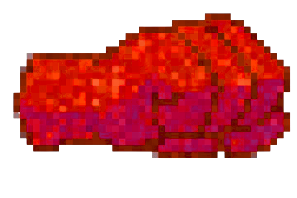
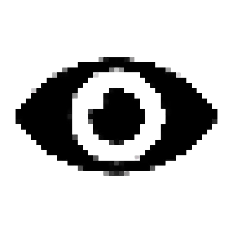
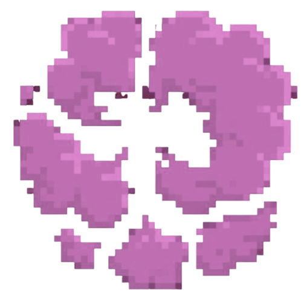

Attacken:
Hauptattacke: Fluchfaust

Schlägt den Gegner und Markiert ihn mit einem Auge. Wenn sei keinen Gegner trifft, und der Gegner markiert ist, verliert er die Markierung, erhält Schaden und wird verlangsamt
 
Spezialattacke: Teleportpunkt

Beim ersten Einsatz merkt setzt sie einen unsichtbaren Teleportpunkt an ihrer aktuellen Position. Beim zweiten Einsatz teleportiert sie sich dort hin und wird kurzzeitig schneller

Mega-Spezialattacke: Mega-Teleportpunkt

Beim ersten Einsatz merkt setzt sie einen unsichtbaren Teleportpunkt an ihrer aktuellen Position. Beim zweiten Einsatz teleportiert sie sich dort hin und wird kurzzeitig schneller und kehrt die Steuerung des Gegners um
Kristallattacke: Ich sehe dich!
Sie Markiert den Gegner sofort mit einem Auge